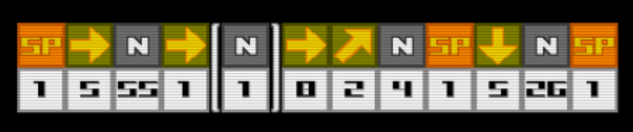
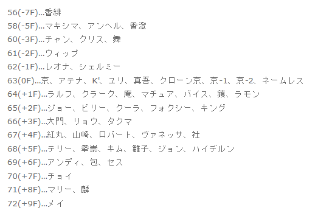

KOF2002UM：しゃがみ移行モーションの1F目と画面端の疑似中段
立った状態からしゃがもうとすると、4Fくらいの「しゃがみ移行モーション」が出ます。このモーションは最初の1Fだけ食らい判定が高いので、起き上がりにこの1Fを狙ってジャンプ攻撃を重ねると、しゃがみガードを入れている相手にも当たります。これが画面端の疑似中段の仕組みです。
しゃがみ移行モーションの性質
- 長さは4Fくらいで、すべてしゃがみ状態として扱われます。
- 食らい判定が高いのは最初の1Fだけ、というキャラがほとんどです。基本的にはどのキャラも高くなりますが、例外がないかは確認中です。
- しゃがみガードやしゃがみ攻撃でキャンセルできます。しゃがみガードなら完全にキャンセルされます。
- 起き上がる前からレバーを下要素に入れていても、しゃがみ移行モーションは出ます。ただし、相手が攻撃を出していて、しゃがみガード方向にレバーを入れながら起き上がった場合は、起き上がりと同時にしゃがみガードになり、しゃがみ移行モーションはまったく出ません。
この1F目の高さが影響するのは、庵のしゃがみ属性ダウンを使った起き攻めと、京などの画面端での疑似中段です。起き上がりにめくり中ジャンプ攻撃を狙う場合も、この1Fに攻撃が重なるようにする必要があります。
包で確かめた例：京の近Aは、しゃがんでいる包には空振りしますが、ダウンからの起き上がりに合わせるとヒットしました。しゃがみ移行モーションの1F目に高い食らい判定が存在するようです。
疑似中段が成立する条件
- 相手がしゃがみガードを入力している。
- 相手が起き上がったフレームに、ジャンプ攻撃などが重なっている。
- 相手が起き上がったフレームまでに、攻撃側が画面端の相手に密着している。
このため前方中ジャンプが使いやすく、相手キャラによってタイミングが変わります。必要な攻撃判定は、下方向への長さよりも、下から斜め下にかけての判定です。
京：C投げ→ダウン回避→中J奈落落とし
画面端で京のC投げ→相手がダウン回避→中ジャンプ奈落落としが、疑似中段になるコマンド登録があります（オリジナル京の同キャラ戦で作成）。このレシピのままだと、成立するキャラとしないキャラに分かれました。

| 結果 | キャラ |
|---|---|
| 疑似中段になる（8キャラ） | 京、真吾、KUSANAGI、京-1、京-2、ラルフ、マチュア、バイス |
| 疑似中段にならない（15キャラ） | レオナ、シェルミー、アテナ、K′、ユリ、ネームレス、クラーク、庵、チン、ラモン、ジョー、ビリー、クーラ、フォクシー、キング |
フレームの調整も必要で、キャラ限定の要素もありそうです。成立しない理由としては、ダウン回避後の復帰フレームの違いか、しゃがみ移行モーションの食らい判定の違いが考えられています。
ネームレスで成立しない理由
最初はダウン回避の時間差によるものと考えていました。しかし、ダウン回避の復帰フレームの一覧では京とネームレスが同じ63F（0F）に並んでいます。そこで、ネームレスのしゃがみ移行モーションには食らい判定の高い部分がないのではないか、という気もしてきたと書いています。ブログのまとめでは、ダウン回避フレームの違いと食らい判定の違いの両方を可能性として挙げています。

ほかの組み合わせで確認した疑似中段
| 攻撃側 | 相手 | 状況と結果 |
|---|---|---|
| 香澄 | チャン | 画面端でダウンさせ、昇り中JDを重ねると疑似中段になり、キャンセル重ね当て弱強が連続ヒット。五郎にもJD自体は当たりますが、重ね当てが空振りするのでいまひとつです（2012年） |
| マチュア | チャン | デスペアー強が、画面端でしゃがみガードしているチャンに当たる。起き上がりに重ねる必要はなく、端付近で近B1段目キャンセルでもガード不能になる（2024年） |
| ケンスウ | 紅丸 | 画面端の紅丸の起き上がりに中JCD。中JCDはしゃがみガードできる技ですが、この場合はしゃがみガードの姿勢が取れず、しゃがみ移行モーションに当たる。紅丸のしゃがみ移行モーションは高いようで、狙いやすいようです（2024年） |
気になること
- 京とネームレスのダウン回避フレームの比較と、ほかのキャラのしゃがみ移行モーションの検証は、今後の課題とされています。
- 最初の1Fが高くならない例外キャラがいるかは確認中です。
- 京のレシピで成立しなかった15キャラが、タイミングを調整しても成立しないのかは分かっていません。
似ているが別の話
- しゃがみガード中の食らい判定の高さはしゃがみガード時の判定の高さ5段階（2010年）にあります。起き上がり直後のしゃがみ移行モーションとは条件が違います。
- 画面端で屈伸してガードの姿勢を延ばす話はKOF'98・2002：端の屈伸ガードポーズにあります。
関連ページ
- キャラ別のメモ：京・香澄・マチュア・ケンスウのX投稿メモ
- 出典（X）：移行モーション・最初の1F・しゃがみガード入力との関係（2011/4/27）、香澄対チャン（2012/2/23）、成立条件（2024/9/30）、マチュア・京のコマンド登録・ネームレスへの疑問・キャラ別の結果（2024/10/1）、ケンスウ対紅丸（2024/11/18）、包（2025/4/5）
- 出典（ブログ）：KOF2002UM：京の画面端での疑似中段を確認しました（2024/11/16）、KOF2002UM：しゃがみ移行モーション＆1F目の食らい判定の高さ関係（2025/4/5）
- 気になること／KOF2002UM 研究アーカイブ